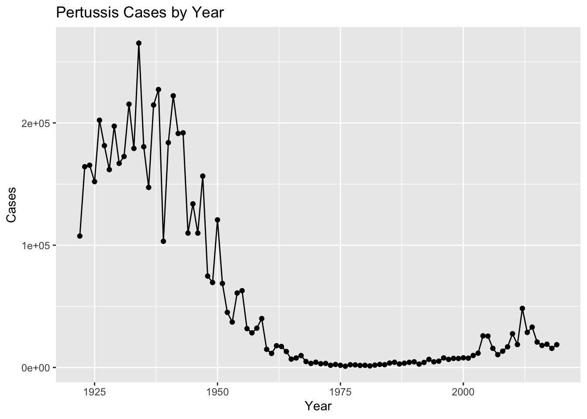
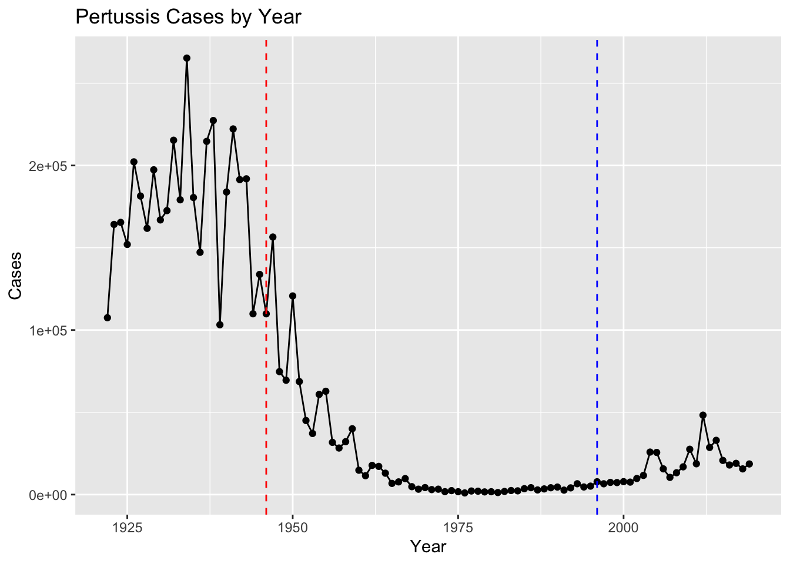
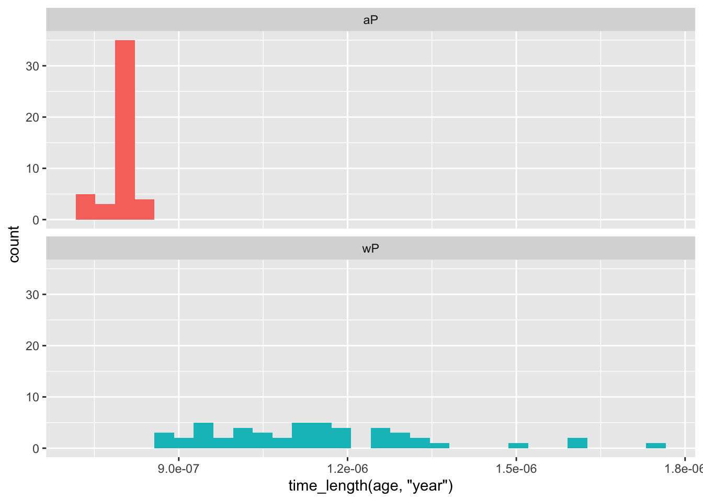
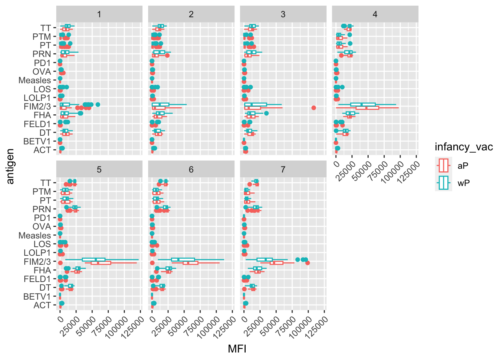
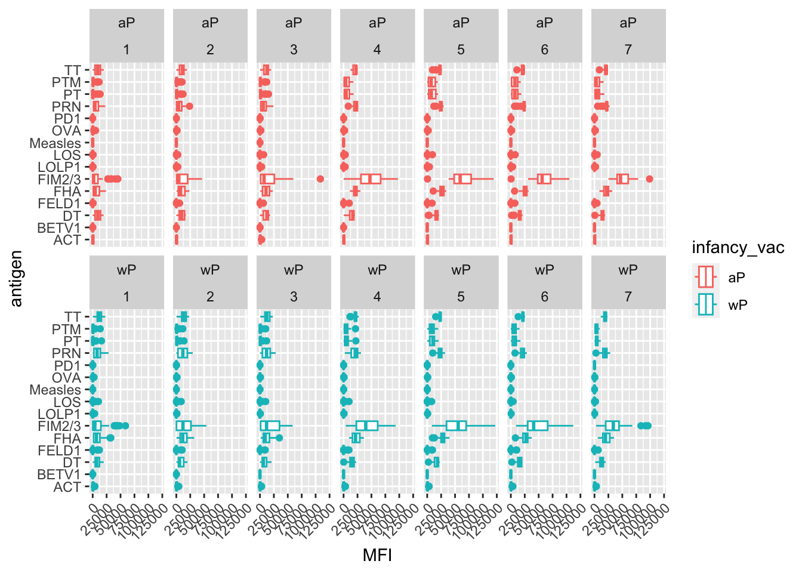

cdc <- data.frame(
Year = c(1922L,
1923L,1924L,1925L,1926L,1927L,1928L,
1929L,1930L,1931L,1932L,1933L,1934L,1935L,
1936L,1937L,1938L,1939L,1940L,1941L,
1942L,1943L,1944L,1945L,1946L,1947L,1948L,
1949L,1950L,1951L,1952L,1953L,1954L,
1955L,1956L,1957L,1958L,1959L,1960L,
1961L,1962L,1963L,1964L,1965L,1966L,1967L,
1968L,1969L,1970L,1971L,1972L,1973L,
1974L,1975L,1976L,1977L,1978L,1979L,1980L,
1981L,1982L,1983L,1984L,1985L,1986L,
1987L,1988L,1989L,1990L,1991L,1992L,1993L,
1994L,1995L,1996L,1997L,1998L,1999L,
2000L,2001L,2002L,2003L,2004L,2005L,
2006L,2007L,2008L,2009L,2010L,2011L,2012L,
2013L,2014L,2015L,2016L,2017L,2018L,
2019L),
Cases = c(107473,
164191,165418,152003,202210,181411,
161799,197371,166914,172559,215343,179135,
265269,180518,147237,214652,227319,103188,
183866,222202,191383,191890,109873,
133792,109860,156517,74715,69479,120718,
68687,45030,37129,60886,62786,31732,28295,
32148,40005,14809,11468,17749,17135,
13005,6799,7717,9718,4810,3285,4249,
3036,3287,1759,2402,1738,1010,2177,2063,
1623,1730,1248,1895,2463,2276,3589,
4195,2823,3450,4157,4570,2719,4083,6586,
4617,5137,7796,6564,7405,7298,7867,
7580,9771,11647,25827,25616,15632,10454,
13278,16858,27550,18719,48277,28639,
32971,20762,17972,18975,15609,18617)
)Class 19: Pertussis Mini Project
Investigating Pertussis cases by year
First install datapasta to be able to read the file as a dataframe. File is from https://www.cdc.gov/pertussis/surv-reporting/cases-by-year.html
Plotting a graph of number of cases vs years
Q1:
library(ggplot2)
ggplot(cdc) + aes(x = Year, y = Cases) + geom_point() + geom_line() + labs(title = "Pertussis Cases by Year") 
Vaccinations introduced
Add lines at vaccine year introductions (1946 and 1996) to the plot.
Q2:
ggplot(cdc) + aes(x = Year, y = Cases) + geom_point() + geom_line() + labs(title = "Pertussis Cases by Year") + geom_vline(xintercept = 1946, linetype = "dashed", color = "red") + geom_vline(xintercept = 1996, linetype = "dashed", color = "blue")
Q3:
Some reasons for this spike could be: 1. mutations in the strain 2. lesser people taking vaccines 3. the ap vaccine ‘degrading’ over the years as opposed to the wp vaccine
Exploring CMI-PB data
First install the jsonlite package to be able to read JSon data from the CMI-PB dataset available online giving more information on the type of vaccine and demographics of children who received the vaccine.
library(jsonlite)
subject <- read_json("https://www.cmi-pb.org/api/subject", simplifyVector = T)Q4: How many aP and wP infancy vaccinated subjects are there?
table(subject$infancy_vac)
aP wP
47 49 Q5: How many male and female subjects are there?
table(subject$biological_sex)
Female Male
66 30 Q6: What is the breakdown of race and biological sex?
table(subject$race, subject$biological_sex)
Female Male
American Indian/Alaska Native 0 1
Asian 18 9
Black or African American 2 0
More Than One Race 8 2
Native Hawaiian or Other Pacific Islander 1 1
Unknown or Not Reported 10 4
White 27 13Side note: Working with Dates
library(lubridate)Loading required package: timechange
Attaching package: 'lubridate'The following objects are masked from 'package:base':
date, intersect, setdiff, uniontoday()[1] "2022-12-01"today() - ymd("1999-11-20")Time difference of 8412 dayshead(subject$year_of_birth, 3)[1] "1986-01-01" "1968-01-01" "1983-01-01"head(subject$date_of_boost, 3)[1] "2016-09-12" "2019-01-28" "2016-10-10"subject$age <- time_length(today() - ymd(subject$year_of_birth), "years")Average age of individuals:
mean(subject$age)[1] 30.76879summary(subject$age) Min. 1st Qu. Median Mean 3rd Qu. Max.
22.92 25.91 27.92 30.77 34.92 54.92 Q7: Determine (i) average age of wP individuals, (ii) average age of aP individuals and (iii) if they’re significantly different.
library(dplyr)
Attaching package: 'dplyr'The following objects are masked from 'package:stats':
filter, lagThe following objects are masked from 'package:base':
intersect, setdiff, setequal, unionap <- subject %>% filter(infancy_vac == "aP")
round(mean(time_length(ap$age)))[1] 25wp <- wp <- subject %>% filter(infancy_vac == "wP")
round(mean(time_length(wp$age)))[1] 36Q8: Determine age during time of boost
diff <- ymd(subject$date_of_boost) - ymd(subject$year_of_birth)
age_boost <- time_length(diff, "years")
head(age_boost)[1] 30.69678 51.07461 33.77413 28.65982 25.65914 28.77481Q9: With the help of a faceted boxplot or histogram, do you think these two groups are significantly different?
Making a histogram with the summary data faceted by aP and wP:
ggplot(subject) +
aes(time_length(age, "year"),
fill=as.factor(infancy_vac)) +
geom_histogram(show.legend=FALSE) +
facet_wrap(vars(infancy_vac), nrow=2) `stat_bin()` using `bins = 30`. Pick better value with `binwidth`.
We can read more data from the same CMI-PB website.
specimen <- read_json("https://www.cmi-pb.org/api/specimen", simplifyVector = T)
head(specimen) specimen_id subject_id actual_day_relative_to_boost
1 1 1 -3
2 2 1 736
3 3 1 1
4 4 1 3
5 5 1 7
6 6 1 11
planned_day_relative_to_boost specimen_type visit
1 0 Blood 1
2 736 Blood 10
3 1 Blood 2
4 3 Blood 3
5 7 Blood 4
6 14 Blood 5titer <- read_json("https://www.cmi-pb.org/api/ab_titer", simplifyVector = T)
head(titer) specimen_id isotype is_antigen_specific antigen MFI MFI_normalised
1 1 IgE FALSE Total 1110.21154 2.493425
2 1 IgE FALSE Total 2708.91616 2.493425
3 1 IgG TRUE PT 68.56614 3.736992
4 1 IgG TRUE PRN 332.12718 2.602350
5 1 IgG TRUE FHA 1887.12263 34.050956
6 1 IgE TRUE ACT 0.10000 1.000000
unit lower_limit_of_detection
1 UG/ML 2.096133
2 IU/ML 29.170000
3 IU/ML 0.530000
4 IU/ML 6.205949
5 IU/ML 4.679535
6 IU/ML 2.816431We can use the dplyr "join" function to join these data together with our subject data.
Q9. Complete the code to join specimen and subject tables to make a new merged data frame containing all specimen records along with their associated subject details:
library(dplyr)
meta <- inner_join(specimen, subject)Joining, by = "subject_id"dim(meta)[1] 729 14Q10. Now using the same procedure join meta with titer data so we can further analyze this data in terms of time of visit aP/wP, male/female etc.
abdata <- inner_join(meta, titer)Joining, by = "specimen_id"dim(abdata)[1] 32675 21Q11. How many specimens (i.e. entries in abdata) do we have for each isotype?
table(abdata$isotype)
IgE IgG IgG1 IgG2 IgG3 IgG4
6698 1413 6141 6141 6141 6141 Q12. What do you notice about the number of visit 8 specimens compared to other visits?
table(abdata$visit)
1 2 3 4 5 6 7 8
5795 4640 4640 4640 4640 4320 3920 80 There were very few visits at visit 8.
Examining IgG1 Ab titer levels
We can filter this data set by isotype
library(dplyr)
ig1 <- abdata %>% filter(isotype == "IgG1", visit!=8)
head(ig1) specimen_id subject_id actual_day_relative_to_boost
1 1 1 -3
2 1 1 -3
3 1 1 -3
4 1 1 -3
5 1 1 -3
6 1 1 -3
planned_day_relative_to_boost specimen_type visit infancy_vac biological_sex
1 0 Blood 1 wP Female
2 0 Blood 1 wP Female
3 0 Blood 1 wP Female
4 0 Blood 1 wP Female
5 0 Blood 1 wP Female
6 0 Blood 1 wP Female
ethnicity race year_of_birth date_of_boost dataset
1 Not Hispanic or Latino White 1986-01-01 2016-09-12 2020_dataset
2 Not Hispanic or Latino White 1986-01-01 2016-09-12 2020_dataset
3 Not Hispanic or Latino White 1986-01-01 2016-09-12 2020_dataset
4 Not Hispanic or Latino White 1986-01-01 2016-09-12 2020_dataset
5 Not Hispanic or Latino White 1986-01-01 2016-09-12 2020_dataset
6 Not Hispanic or Latino White 1986-01-01 2016-09-12 2020_dataset
age isotype is_antigen_specific antigen MFI MFI_normalised unit
1 36.91444 IgG1 TRUE ACT 274.355068 0.6928058 IU/ML
2 36.91444 IgG1 TRUE LOS 10.974026 2.1645083 IU/ML
3 36.91444 IgG1 TRUE FELD1 1.448796 0.8080941 IU/ML
4 36.91444 IgG1 TRUE BETV1 0.100000 1.0000000 IU/ML
5 36.91444 IgG1 TRUE LOLP1 0.100000 1.0000000 IU/ML
6 36.91444 IgG1 TRUE Measles 36.277417 1.6638332 IU/ML
lower_limit_of_detection
1 3.848750
2 4.357917
3 2.699944
4 1.734784
5 2.550606
6 4.438966Q13: Make a boxplot of Ab titer levels
ggplot(ig1) + aes(x = MFI, y = antigen, col = infancy_vac) + geom_boxplot() +
facet_wrap(vars(visit), nrow=2) +
theme(axis.text.x = element_text(angle = 45, hjust=1))
Q14. What antigens show differences in the level of IgG1 antibody titers recognizing them over time? Why these and not others?
The highest is between Fim2/3 which are fimbrial proteins that are a part of the pertussis structure.
We can also facet wrap the plot by infancy_vac rates
ggplot(ig1) + aes(x = MFI, y = antigen, col = infancy_vac) + geom_boxplot() +
facet_wrap(vars(infancy_vac, visit), nrow=2) +
theme(axis.text.x = element_text(angle = 45, hjust=1))
Q15. Filter to pull out only two specific antigens for analysis and create a boxplot for each. You can chose any you like.
filter(ig1, antigen == "Measles") %>%
ggplot() + aes(MFI, col = infancy_vac) + geom_boxplot(show.legend = F) + facet_wrap(vars(visit)) + theme_bw()
filter(ig1, antigen == "FIM2/3") %>%
ggplot() + aes(MFI, col = infancy_vac) + geom_boxplot(show.legend = F) + facet_wrap(vars(visit)) + theme_bw()
Q16: What do you notice about these two antigens time courses and the FIM2/3 data in particular?
The FIM2/3 levels increase over time, a lot more than that of Measles especially during visit 5. Trends are also similar for aP and wP.
Q17: Do you see any clear difference in aP vs. wP responses?
aP and wP responses are fairly similar across Measles and FIM2/3.
Obtaining CMI-PB RNA seq data
We can obtain RNA seq data for the IGHG1 gene.
url <- "https://www.cmi-pb.org/api/v2/rnaseq?versioned_ensembl_gene_id=eq.ENSG00000211896.7"
rna <- read_json(url, simplifyVector = TRUE) Then we can join this to our meta dataset that contains subject and specimen.
ssrna <- inner_join(rna, meta)Joining, by = "specimen_id"Q18. Make a plot of the time course of gene expression for IGHG1 gene (i.e. a plot of visit vs. tpm).
ggplot(ssrna) + aes(x = visit, y = tpm, group=subject_id) + geom_point() + geom_line(alpha=0.2)
Q19.: What do you notice about the expression of this gene (i.e. when is it at it’s maximum level)?
It’s at its maximum level at visit 4, after which it drops in visit 5.
Q20. Does this pattern in time match the trend of antibody titer data? If not, why not?
This pattern does not exactly match the trend of the ab titer data. There was a spike seen in the antigen FMI2/3 levels at visit 5 but these did not reduce as time went by. This is since antibodies are longer lived where as tpm degraded by visit 5 once the antibodies had been made after visit 4.
Coloring and faceting a boxplot by infancy_vac
ggplot(ssrna) + aes(tpm, col = infancy_vac) + geom_boxplot() + facet_wrap(vars(visit))
There are no clear differences between aP and wP. Looking into a particular visit:
ssrna %>%
filter(visit == 4) %>%
ggplot() + aes(tpm, col = infancy_vac) + geom_density() + geom_rug()